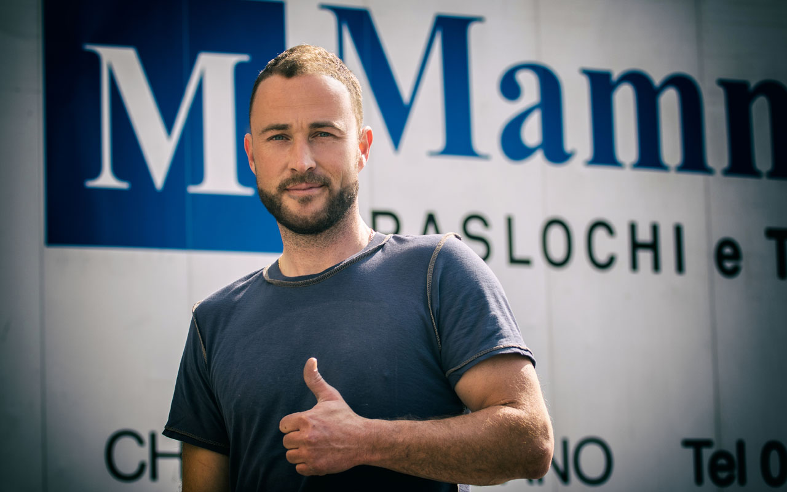

Una famiglia di traslocatori a Lugano dal 1986.
Da 40 anni aiutiamo privati e aziende del Ticino a cambiare casa e sede. Siamo cresciuti col passaparola, un trasloco dopo l'altro.
In breve
Mammano Traslochi e Trasporti è una ditta di traslochi familiare con sede a Lugano, attiva dal 1986 e oggi guidata dal titolare Patrick Mammano. Ha eseguito oltre 10'000 traslochi in Ticino, in Svizzera e all'estero, lavorando solo con personale assunto e con veicoli propri.

La nostra storia
Quarant'anni di traslochi in Ticino.
Mammano Traslochi nasce a Lugano nel 1986 come azienda di famiglia. In quarant'anni abbiamo eseguito oltre 10'000 traslochi: appartamenti nel centro di Lugano, case nelle valli, uffici, negozi e traslochi verso l'estero.
Oggi l'azienda è guidata da Patrick Mammano, che ha portato nuovi mezzi e nuovi servizi mantenendo lo stesso metodo: un consulente che viene a vedere il lavoro, un preventivo chiaro e una squadra che lo esegue con cura.

«Il cliente deve poter pensare alla sua nuova casa. Del trasloco ci occupiamo noi, come se fossero i nostri mobili.»
I nostri valori
Quello che ci chiedono, e che manteniamo.
Affidabilità
Rispettiamo date e orari concordati. Personale e veicoli sono nostri: nessun subappalto.
Trasparenza
Preventivo scritto dopo il sopralluogo, con tutte le voci chiare fin dall'inizio.
Personale qualificato
Solo collaboratori assunti e regolari, veloci, precisi e con anni di esperienza.
Mezzi controllati
Veicoli e attrezzature lavati e controllati ogni settimana dai nostri tecnici.
Attenzione all'ambiente
Motori Euro 4 e 5 con filtro antiparticolato e smaltimento tramite enti autorizzati.
Puntualità e cortesia
Orari flessibili e rispetto per la vostra casa e i vostri mobili.
Mezzi e attrezzature
Il nostro parco veicoli.
| Lift esterno Paus | Fino a 25 m di altezza, portata 400 kg |
|---|---|
| Nissan Cabstar | Camion, anche con sponda idraulica |
| Mercedes Sprinter e VW Transporter | Furgoni per traslochi e trasporti |
| Renault Kangoo | Piccoli trasporti e consegne |
| Rimorchio Humbaur | 24 m³ |
Conosciamoci al sopralluogo.
È gratuito, senza impegno, e vi dà un prezzo reale.